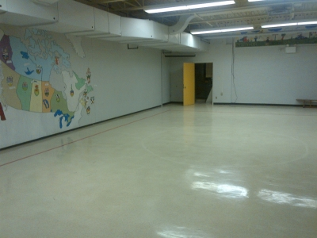

NMBA's Pursuit of Former Alexander Gibson School
The pearl inside the shell
Challenging?
Yes, indeed, but rare has it been that a challenge has been turned down by the Northside Minor Basketball Association. In the end, though, the project was daunting at best, difficult at least, despite the vision the NMBA had for the former Alexander Gibson Memorial School.
When it was announced the former elementary school in Marysville was deemed surplus and placed for sale by the Province of New Brunswick, the NMBA dug in for a project. A number of board members toured the school on two occasions to assess its worth in terms of turning the building into a multi-purpose health and community centre.
“Some of us were definitely intrigued by the endless possibilities of bringing renewed growth and even a further sense of community into that rapidly increasing population area”, said NMBA president Brad Janes. “The vision of running camps, programs, housing sport organizations in offices and turning that wonderful old school into a re-purposing project was a big, big dream for many.”
However, the reality of attempting to purchase, renovate and begin the process of turning AGMS into a thriving project was big.
Big indeed.
Some of the visions included turning the classrooms into multiple offices for smaller sporting or community organizations, creating a daycare, physiotherapy offerings, turning some rooms into dorms for elite training and film rooms and re-furbishing the gymnasium.
Those plans included a new floor, new baskets, scoreboard and revamped locker rooms.
The vision was to have a fulltime property manager with at least two assistants, also hiring students for camps and rental management.
“We did our homework and prepared a pretty in-depth report that we were prepared to turn over to the Province of New Brunswick”, said Janes. “In the end, we realized without the help of a major community-minded partner, the initiative was too large to take on ourselves as a small community organization. That gymnasium is sitting there, along with the rest of the school, and could be such a wonderful story. We wanted to tell our story so it doesn't become a forgotten piece of property.”
There could be other bids and interest for private business to take control of the facility.
Anything is better than watching the building become a waste, but the NMBA wanted to turn into a community project with the gymnasium as the focal point of the operation.
“If you go to the area, it's not hard to imagine children outside playing, sporting and community groups calling the school home in offices and the ability to host tournaments or house elite athletic teams for training”, Janes said. “It has the potential to be re-purposed and turned into a thriving athletic and cultural facility for health and wellness. We had no idea there's a faux wall overlooking the gymnasium from up top. There were so many possibilities. We wish we could create something, but without some help, the file has been shelved. We hope someone grabs the torch. There's too much potential.”
 Behind the mapping wall is an open view to the gymnasium.